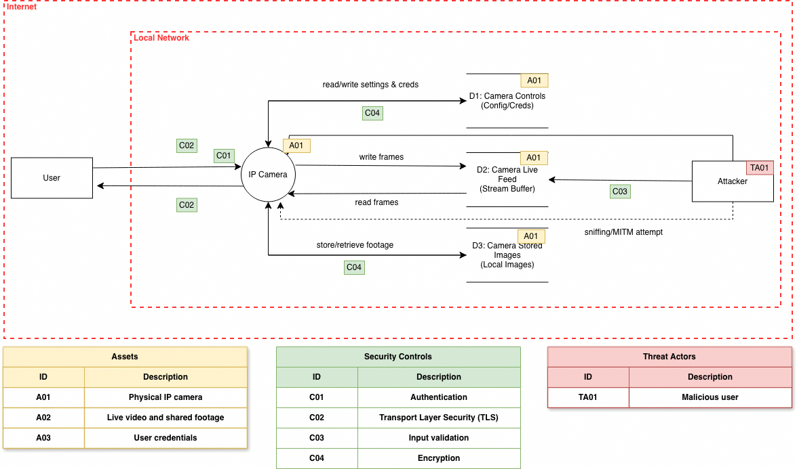
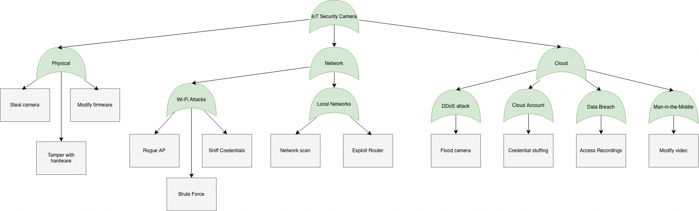

2.2. Threat Model
This chapter will describe a selection scheme for test cases, which is based on potential threats identified through a formal threat and risk modeling approach, specifically tailored to the IoT camera being tested in this framework. The threat model used in this and provides a structured framework for defining and selecting threats relevant to the specific architecture and data flows of an IoT camera device.

The rationale for adopting a formal threat and risk modeling is:
- Architecture-Specific Depth: Formal threat and risk modeling allows for a deep analysis of the specific implementation design of the IoT camera. Since cameras often involve complex subsystems (e.g., video encoding, audio processing, local storage, and network interfaces), identified threats are based on precise conditions of the solution, ensuring that high-value risks associated with media streams and persistent connectivity are not overlooked.
- Risk Justification: While performing a formal threat and risk analysis requires more time, this investment is justified for an IoT camera due to its critical nature as a network-facing device handling sensitive visual data. Making a formal analysis the standard requirement ensures comprehensive coverage of attack vectors without significantly increasing expenses per test beyond acceptable limits for high-risk hardware.
- Scope and Access Definition: As will be explained in following sections, the spectrum of potential threats reaches from anonymous global actors to privileged individuals and users of the device. The list of threats can be narrowed down by defining minimum and maximum access requirements, representing the test perspective. Every device component and test case will be tagged with the access level required to perform the respective tests. Hence, the list of device components in scope of the test as well as the list of applicable test cases will be a result of applying the formal threat model on the results yielded by the device model.
Attack Vectors

This diagram provides a comprehensive visualization of the attack surface associated with an IoT Security Camera, segmented into three primary domains: Physical, Network, and Cloud. It serves as a foundational reference for conducting a holistic security assessment, ensuring that vulnerabilities are identified across all layers of the device's lifecycle.
1. Physical Domain
This branch addresses threats arising from direct physical access to the hardware. Even if digital defenses are strong, physical proximity allows an attacker to bypass software locks entirely.
- Steal Camera: Risk of theft leading to loss of surveillance coverage or data exfiltration.
- Tamper with Hardware: Physical manipulation of sensors, lenses, or internal components (e.g., blocking the lens or altering hardware IDs).
- Modify Firmware: Accessing the device via physical ports (like UART) to flash malicious firmware or reset security credentials.
2. Network Domain
This branch analyzes vulnerabilities within the communication layer, focusing on how the camera connects to the local environment. It is subdivided into two specific attack vectors:
- Wi-Fi Attacks: Targets the wireless interface and authentication protocols.
- Rogue AP: An attacker sets up a fake access point to lure the camera (or user) into connecting, enabling man-in-the-middle scenarios.
- Sniff Credentials: Intercepting unencrypted traffic or weak handshake packets to steal Wi-Fi passwords.
- Brute Force: Attempting to guess default administrative credentials often found on consumer IoT devices.
- Local Networks: Focuses on the security of the Local Area Network (LAN) itself.
- Network Scan: Identifying open ports or services exposed on the camera's IP address.
- Exploit Router: Compromising the gateway router to gain a pivot point into the internal network where the camera resides.
3. Cloud Domain
This branch evaluates risks associated with remote management, data storage, and backend infrastructure. Since many IoT cameras rely on cloud services for recording and analytics, this layer is critical.
- DDoS Attack: Overwhelming the device or its cloud endpoint to cause a "Flood camera" state (loss of connectivity).
- Cloud Account: Targeting the user's account credentials used to manage the device.
- Credential Stuffing: Using leaked passwords from other breaches to log into the camera's cloud dashboard.
- Data Breach: Compromising the storage backend.
- Access Recordings: Stealing historical video footage stored in the cloud.
- Man-in-the-Middle (MitM): Intercepting the encrypted stream between the device and the cloud to "Modify video" or inject frames into the live feed.
Summary for Assessment Frameworks
When integrating this diagram into the security assessment framework, evaluators should use it as a checklist to ensure that:
- Physical Hardening is tested (e.g., reset buttons, port access).
- Network Hygiene is verified (e.g., default passwords, open ports, Wi-Fi encryption).
- Cloud Posture is audited (e.g., API security, account MFA, and data encryption at rest/in transit).